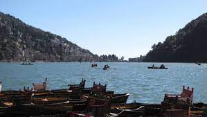

The state is host to the mighty Himalayas, which guarantee a rich growth of flora and fauna, a pleasant climate and a peaceful and serene environment. The many glaciers here are sources of some of the major rivers of India, including the Ganga and the Yamuna.
Boasting of enchanting view of the Himalayas, and cultural ethos that speaks of simplistic living amidst nature and harmony – Uttarakhand is a land of sublime natural beauty and serene spirituality.